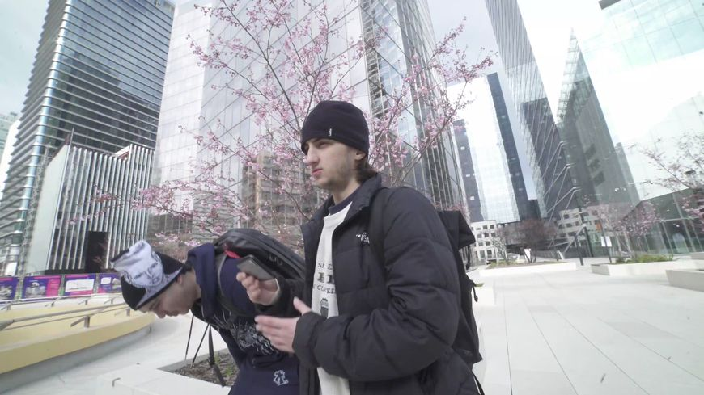

H JEUNECRACK
H gratte ses premières rimes dans ses cahiers de cours, s'essayant aux freestyles en rencontrant les autres rappeurs de sa ville. Tout devient concret le jour où il s'achète son premier micro. 100% autodidacte, il commence alors à enregistrer dans sa chambre, faire ses propres instrumentales et mixer lui-même ses morceaux. Avec le temps, la chambre de H deviendra un studio pour sa bande de potes. Depuis mars 2021, il lance sa série de différents « Cycles » entrecoupés de projets communs avec Beamer (Mauvaise Musique) et les beatmakers Bricksy & 3g (Cactus). JeuneCrack impose très vite son style avec des rimes affutées sur ses propres compositions plus originales les unes que les autres. Après avoir vécu ses premiers concerts au printemps 2022 (une première partie de Limsa D'Aulnay et un co-plateau sold-out au Badaboum à Paris), il à recemment sorti son dernier opus « 3e Cycle ». H JeuneCrack poursuit son bonhomme de chemin, déterminé comme jamais.